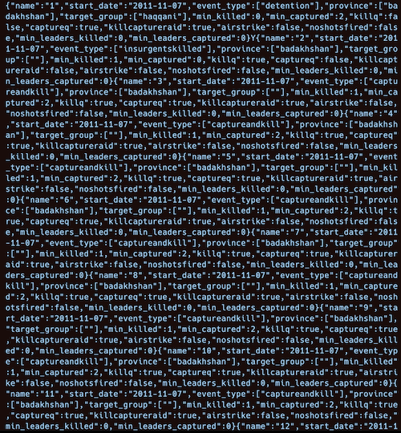

from datasets import load_dataset
import pandas as pd
from rich import print
# Loadthe dataset
train_dataset = load_dataset("strickvl/isafpressreleases", split="train")
test_dataset = load_dataset("strickvl/isafpressreleases", split="test")
# Convert the dataset to a pandas DataFrame
train_df = pd.DataFrame(train_dataset)
test_df = pd.DataFrame(test_dataset)Finetuning my first LLM(s) for structured data extraction with axolotl
nlp
afghanistan
llms
miniproject
finetuning
isafpr
I finetuned my first LLM(s) for the task of extracting structured data from ISAF press releases. Initial tests suggest that it worked pretty well out of the box.
We previously looked into how well the top LLMs could do when given press releases and asked to extract structured data from them. I was glad that this clearly wasn’t a task they struggled with, but it was by no means a simple task for them and some basic evaluations that I performed showed that there was room for improvement.
Since writing that post I also heard from readers to say that perhaps I wasn’t using the OpenAI API in a way that would get the best results. In particular, function calling would give a better accuracy over the raw prompting that I was using. I’ll probably return to that in a separate post when I compare how well we’re doing with finetuning.
As a quick reminder, we’re hoping to create something that will allow us to go from an unstructured text (a press release, in our case) to a structured output that accurately extracts certain pieces of metadata from the text. Please give the first post in the series a read if you want more of the context of what we’re doing.
This blogpost will be about my first finetune(s) of some models and I’ll showcase how I got the data ready and then some observations about the finetuning process in general.
Preparing data for finetuning
In my previous posts I’ve already showed how I converted my dataset into Pydantic models. This helps ensure a uniformity to the data I’ll be using in my finetuning. We’ll actually want to convert the labelled data into JSON strings from the Pydantic models, but as an interim datastructure Pydantic is useful for the validation.
Loading the datasets
train_datasetDataset({
features: ['name', 'eventrefnumber', 'text', 'StartDate', 'eventtype', 'province', 'citydistrict', 'village', 'targetgroup', 'commander', 'position', 'minkilled', 'mincaptured', 'capturedcharacterisation', 'killedcharacterisation', 'killq', 'captureq', 'killcaptureraid', 'airstrike', 'noshotsfired', 'dataprocessed', 'flagged', 'glossarymeta', 'minleaderskilled', 'minfacilitatorskilled', 'minleaderscaptured', 'minfacilitatorscaptured', 'leaderq'],
num_rows: 4098
})test_datasetDataset({
features: ['name', 'eventrefnumber', 'text', 'StartDate', 'eventtype', 'province', 'citydistrict', 'village', 'targetgroup', 'commander', 'position', 'minkilled', 'mincaptured', 'capturedcharacterisation', 'killedcharacterisation', 'killq', 'captureq', 'killcaptureraid', 'airstrike', 'noshotsfired', 'dataprocessed', 'flagged', 'glossarymeta', 'minleaderskilled', 'minfacilitatorskilled', 'minleaderscaptured', 'minfacilitatorscaptured', 'leaderq'],
num_rows: 724
})We have 4098 training examples and 724 test examples. This seems a good split to me. I experimented a bit with the exact split and found that 15% seemed like a good compromise. We want enough data to get a good evaluation, but we also want to give our model enough examples to learn. In the course people were frequently talking about somewhere in the order of mid hundreds to low thousands as being the sweet spot, so I hope I’m firmly in that range.
It’s also worth reflecting that I’m lucky that I have such a large clean dataset to work with. In a later project I’d like to try working with much less and slowly building up something more complex since that’s a skill in and of itself.
Setting up our Pydantic models with validation
There’s a decent amount of code in the next cell, and definitely read the previous posts to understand what all the pieces are about, but in a nutshell we’re setting ourselves up to extract structured data from the text. This Pydantic model is what will hold the data we’re interested in.
from enum import Enum
from typing import Set, Annotated, Optional
from pydantic import BaseModel, Field, validator, ValidationInfo
from datetime import date
class EventType(str, Enum):
airstrike = "airstrike"
detention = "detention"
captureandkill = "captureandkill"
insurgentskilled = "insurgentskilled"
exchangeoffire = "exchangeoffire"
civiliancasualty = "civiliancasualty"
class Province(str, Enum):
badakhshan = "badakhshan"
badghis = "badghis"
baghlan = "baghlan"
balkh = "balkh"
bamyan = "bamyan"
day_kundi = "day_kundi"
farah = "farah"
faryab = "faryab"
ghazni = "ghazni"
ghor = "ghor"
helmand = "helmand"
herat = "herat"
jowzjan = "jowzjan"
kabul = "kabul"
kandahar = "kandahar"
kapisa = "kapisa"
khost = "khost"
kunar = "kunar"
kunduz = "kunduz"
laghman = "laghman"
logar = "logar"
nangarhar = "nangarhar"
nimroz = "nimroz"
nuristan = "nuristan"
paktya = "paktya"
paktika = "paktika"
panjshir = "panjshir"
parwan = "parwan"
samangan = "samangan"
sar_e_pul = "sar_e_pul"
takhar = "takhar"
uruzgan = "uruzgan"
wardak = "wardak"
zabul = "zabul"
class TargetGroup(str, Enum):
taliban = "taliban"
haqqani = "haqqani"
criminals = "criminals"
aq = "aq"
hig = "hig"
let = "let"
imu = "imu"
judq = "judq"
iju = "iju"
hik = "hik"
ttp = "ttp"
other = "other"
def validate_event_type(value: str):
valid_values = [
"airstrike",
"detention",
"captureandkill",
"insurgentskilled",
"exchangeoffire",
"civiliancasualty",
]
if value.lower() not in valid_values:
return "other"
return value.lower()
def validate_province(value: str):
valid_values = [
"badakhshan",
"badghis",
"baghlan",
"balkh",
"bamyan",
"day_kundi",
"farah",
"faryab",
"ghazni",
"ghor",
"helmand",
"herat",
"jowzjan",
"kabul",
"kandahar",
"kapisa",
"khost",
"kunar",
"kunduz",
"laghman",
"logar",
"nangarhar",
"nimroz",
"nuristan",
"paktya",
"paktika",
"panjshir",
"parwan",
"samangan",
"sar_e_pul",
"takhar",
"uruzgan",
"wardak",
"zabul",
]
if value.lower() not in valid_values:
return "other"
return value.lower()
def validate_target_group(value: str):
valid_values = [
"taliban",
"haqqani",
"criminals",
"aq",
"hig",
"let",
"imu",
"judq",
"iju",
"hik",
"ttp",
"other",
]
if value.lower() not in valid_values:
return "other"
return value.lower()
class IsafEvent(BaseModel):
name: str = Field(
description="A title or name for the event which summarises the event as a headline"
)
text: Optional[str] = Field(description="The full text of the press release")
start_date: date = Field(
description="The start date of the event in YYYY-MM-DD format"
)
event_type: Set[Annotated[str, Field(validator=validate_event_type)]] = Field(
description="The event type. Can be multiple types."
)
province: Set[Annotated[str, Field(validator=validate_province)]] = Field(
description="The province in which the event occurred. Can be multiple provinces."
)
target_group: Set[Annotated[str, Field(validator=validate_target_group)]] = Field(
description="The group that was targetted during the event. Can be multiple groups."
)
min_killed: int = Field(
description="The minimum number of people killed during the event"
)
min_captured: int = Field(
description="The minimum number of people captured during the event"
)
killq: bool = Field(
description="Whether someone was killed or not during the event"
)
captureq: bool = Field(
description="Whether someone was captured or not during the event"
)
killcaptureraid: bool = Field(
description="Whether the event was a so-called 'kill-capture raid'."
)
airstrike: bool = Field(
description="Whether an airstrike was used during the event"
)
noshotsfired: bool = Field(
description="Whether no shots were fired during the event"
)
min_leaders_killed: int = Field(
description="The minimum number of leaders killed during the event"
)
min_leaders_captured: int = Field(
description="The minimum number of leaders captured during the event"
)
class Config:
arbitrary_types_allowed = TrueHere’s what a couple of examples of our training data looks like as Pydantic models when we pass them in:
from typing import List
events: List[IsafEvent] = []
for i, row in list(train_df.iterrows()):
event_types = set(
eventtype.strip().lower() for eventtype in row["eventtype"].split(",")
)
provinces = set(province.strip().lower() for province in row["province"].split(","))
target_groups = set(
target_group.strip().lower() for target_group in row["targetgroup"].split(",")
)
events.append(
IsafEvent(
name=row["name"],
text=row["text"],
start_date=row["StartDate"].to_pydatetime().date(),
event_type=event_types,
province=provinces,
target_group=target_groups,
min_killed=int(row["minkilled"]),
min_captured=int(row["mincaptured"]),
killq=row["killq"] == "true",
captureq=row["captureq"] == "true",
killcaptureraid=row["killcaptureraid"] == "true",
airstrike=row["airstrike"] == "true",
noshotsfired=row["noshotsfired"] == "true",
min_leaders_killed=int(row["minleaderskilled"]),
min_leaders_captured=int(row["minleaderscaptured"]),
)
)
print(events[:2])[ IsafEvent( name='Several insurgents killed in Helmand', text='ISAF Joint Command Evening Operational Update Feb. 19, 2011\nISAF Joint Command - Afghanistan\u20282011-02-S-143\u2028For Immediate Release \u2028\u2028KABUL, Afghanistan (Feb. 19)\u2028\u2028ISAF service members at a compound in Sangin district, Helmand province observed numerous insurgents north and south of their position talking on radios today. After gaining positive identification of the insurgent positions, the coalition troops engaged, killing several insurgents. Later, the ISAF troops observed more insurgents positioning in the area with weapons. After positive identification, coalition forces continued firing on the various insurgent positions, resulting in several more insurgents being killed.', start_date=datetime.date(2011, 2, 18), event_type={'insurgentskilled'}, province={'helmand'}, target_group={''}, min_killed=6, min_captured=0, killq=True, captureq=False, killcaptureraid=False, airstrike=False, noshotsfired=False, min_leaders_killed=0, min_leaders_captured=0 ), IsafEvent( name='Force Continues Targeting Haqqani Leadership', text='Force Continues Targeting Haqqani Leadership\nISAF Joint Command - Afghanistan\u20282010-09-CA-211 For Immediate Release\u2028Download PDF \u2028\u2028\u2028\xa0KABUL, Afghanistan (Sept. 20) - An Afghan and coalition security force detained two insurgents, including a Haqqani Network sub-commander operating in Khost province, Sunday. \u2028\u2028The commander coordinated and conducted attacks on coalition forces operating in the province and was formerly active in Kabul. \u2028\u2028Intelligence reports led the security force to a compound northwest of Khost City to search for the commander. Afghan forces called for all occupants to exit the buildings peacefully and then the combined force cleared and secured the compound. During the clearance, an armed individual came out of an adjacent building toward the security force. The forced engaged the individual and killed him. \u2028\u2028After the area was secure, the security force questioned the residents at the scene and detained the commander and one of his associates. The security force also found multiple automatic weapons, magazines and grenades at the scene. \u2028\u2028The assault force protected the women and children throughout the search.', start_date=datetime.date(2010, 9, 19), event_type={'captureandkill'}, province={'khost'}, target_group={'haqqani'}, min_killed=1, min_captured=2, killq=True, captureq=True, killcaptureraid=True, airstrike=False, noshotsfired=False, min_leaders_killed=0, min_leaders_captured=0 ) ]
So this is data that we’ve already labelled. You can see the text that we’ll provide as input to our model, and then you can see the various fields that we’re hoping our model can learn to extract. As a JSON string, the prediction that we’re hoping our model will output would look like this:
json_str = events[0].model_dump_json(exclude={"text"})
print(json_str){"name":"Several insurgents killed in Helmand","start_date":"2011-02-18","event_type":["insurgentskilled"],"province":["helmand"],"target_group":[""],"mi n_killed":6,"min_captured":0,"killq":true,"captureq":false,"killcaptureraid":false,"airstrike":false,"noshotsfired" :false,"min_leaders_killed":0,"min_leaders_captured":0}
If you wish to view more examples of the data, I created an interim dataset which I uploaded to the Hugging Face Hub, but it’s not completely in the required form for finetuning so I’ll just link to it here and you can explore it to see the pairings of input and output if you’re interested.
Writing our data as JSONL
axolotl likes its training data as a JSONL file, so that’s what we’ll write to disk to make training possible. We’ll write two different files, one for training and another for evaluation. axolotl actually handles making a train-test split for us, so we’ll actually use the test set as a true held out evaluation set for use later on.
The data needs to be formatted in a certain way for our model to learn to output in JSON format. I’ll show two different ways of doing this below, since I found the process a bit confusing and the first time I did it in a way that technically works but might not be the best.
Writing Template-Free JSON
Another option available to us, especially if we are finetuning a base LLM (as opposed to one that has been instruction-tuned), is to write our data in a different format. Hamel’s written a guide for this on his blog and that has also been absorbed into the official axolotl documentation, so read the blog if you want more information.
The basic idea is that instead of following a format like the one above, we can essentially create our own that’s custom to our own needs. You want this kind of freedom because to follow one of the standard templates is sometimes to shoot yourself in the food with artifacts of those templates that you don’t need in your output.
The key is to specify train_on_inputs as false in our axolotl config which will allow us to mask certain segments of our input data. This means that our model won’t learn the inputs but only the outputs (which we’ll specify).
All that we have to do is set up the JSONL output in a way that makes sense for our use case:
template_free_train_target_file_path = (
"../data/templatefree_isaf_press_releases_ft_train.jsonl"
)
template_free_test_target_file_path = (
"../data/templatefree_isaf_press_releases_ft_test.jsonl"
)
def write_data_to_jsonl(df: pd.DataFrame, target_file_path: str) -> None:
events: List[IsafEvent] = []
for i, row in list(df.iterrows()):
event_types = set(
eventtype.strip().lower() for eventtype in row["eventtype"].split(",")
)
provinces = set(
province.strip().lower() for province in row["province"].split(",")
)
target_groups = set(
target_group.strip().lower()
for target_group in row["targetgroup"].split(",")
)
events.append(
IsafEvent(
name=row["name"],
text=row["text"],
start_date=row["StartDate"].to_pydatetime().date(),
event_type=event_types,
province=provinces,
target_group=target_groups,
min_killed=int(row["minkilled"]),
min_captured=int(row["mincaptured"]),
killq=row["killq"] == "true",
captureq=row["captureq"] == "true",
killcaptureraid=row["killcaptureraid"] == "true",
airstrike=row["airstrike"] == "true",
noshotsfired=row["noshotsfired"] == "true",
min_leaders_killed=int(row["minleaderskilled"]),
min_leaders_captured=int(row["minleaderscaptured"]),
)
)
processed_data = [
{
"segments": [
{
"label": False,
"text": "<s>You are an expert at identifying events in a press release. You are precise and always make sure you are correct, drawing inference from the text of the press release. event_types = ['airstrike', 'detention', 'captureandkill', 'insurgentskilled', 'exchangeoffire', 'civiliancasualty'], provinces = ['badakhshan', 'badghis', 'baghlan', 'balkh', 'bamyan', 'day_kundi', 'farah', 'faryab', 'ghazni', 'ghor', 'helmand', 'herat', 'jowzjan', 'kabul', 'kandahar', 'kapisa', 'khost', 'kunar', 'kunduz', 'laghman', 'logar', 'nangarhar', 'nimroz', 'nuristan', 'paktya', 'paktika', 'panjshir', 'parwan', 'samangan', 'sar_e_pul', 'takhar', 'uruzgan', 'wardak', 'zabul'], target_groups = ['taliban', 'haqqani', 'criminals', 'aq', 'hig', 'let', 'imu', 'judq', 'iju', 'hik', 'ttp', 'other']",
},
{"label": False, "text": f"PRESS RELEASE TEXT: {event.text}"},
{
"label": True,
"text": f"{event.model_dump_json(exclude={'text'})}</s>",
},
]
}
for event in events
]
# Write the processed data to a JSONL file
os.makedirs(os.path.dirname(target_file_path), exist_ok=True)
with open(target_file_path, "w") as f:
for item in processed_data:
f.write(json.dumps(item) + "\n")
write_data_to_jsonl(train_df, template_free_train_target_file_path)
write_data_to_jsonl(test_df, template_free_test_target_file_path)And you can now see the difference in the format of the JSONL dataset we’ve constructured:
with open(template_free_train_target_file_path, "r") as f:
print(f.readline()){"segments": [{"label": false, "text": "<s>You are an expert at identifying events in a press release. You are precise and always make sure you are correct, drawing inference from the text of the press release. event_types = ['airstrike', 'detention', 'captureandkill', 'insurgentskilled', 'exchangeoffire', 'civiliancasualty'], provinces = ['badakhshan', 'badghis', 'baghlan', 'balkh', 'bamyan', 'day_kundi', 'farah', 'faryab', 'ghazni', 'ghor', 'helmand', 'herat', 'jowzjan', 'kabul', 'kandahar', 'kapisa', 'khost', 'kunar', 'kunduz', 'laghman', 'logar', 'nangarhar', 'nimroz', 'nuristan', 'paktya', 'paktika', 'panjshir', 'parwan', 'samangan', 'sar_e_pul', 'takhar', 'uruzgan', 'wardak', 'zabul'], target_groups = ['taliban', 'haqqani', 'criminals', 'aq', 'hig', 'let', 'imu', 'judq', 'iju', 'hik', 'ttp', 'other']"}, {"label": false, "text": "PRESS RELEASE TEXT: ISAF Joint Command Evening Operational Update Feb. 19, 2011\nISAF Joint Command - Afghanistan\u20282011-02-S-143\u2028For Immediate Release \u2028\u2028KABUL, Afghanistan (Feb. 19)\u2028\u2028ISAF service members at a compound in Sangin district, Helmand province observed numerous insurgents north and south of their position talking on radios today. After gaining positive identification of the insurgent positions, the coalition troops engaged, killing several insurgents. Later, the ISAF troops observed more insurgents positioning in the area with weapons. After positive identification, coalition forces continued firing on the various insurgent positions, resulting in several more insurgents being killed."}, {"label": true, "text": "{\"name\":\"Several insurgents killed in Helmand\",\"start_date\":\"2011-02-18\",\"event_type\":[\"insurgentskilled\"],\"province\":[\"helmand\"],\"target_g roup\":[\"\"],\"min_killed\":6,\"min_captured\":0,\"killq\":true,\"captureq\":false,\"killcaptureraid\":false,\"air strike\":false,\"noshotsfired\":false,\"min_leaders_killed\":0,\"min_leaders_captured\":0}</s>"}]}
Finetuning our model
With our datasets ready, finetuning our model is a simple matter of running the following two commands:
# preprocess the data ahead of training
CUDA_VISIBLE_DEVICES="" python -m axolotl.cli.preprocess configs/tiny-llama/lora.yml
# train the model
accelerate launch -m axolotl.cli.train configs/tiny-llama/lora.ymlaxolotl handles everything else. You’ll note that we’re using a pre-prepared config file which is quite long but I’m basically using a default config with only a few changes. We can use bat to view the config file:
!bat /home/strickvl/coding/isafpr_finetune/configs/tiny-llama/lora.yml───────┬──────────────────────────────────────────────────────────────────────── │ File: /home/strickvl/coding/isafpr_finetune/configs/tiny-llama/lora.yml ───────┼──────────────────────────────────────────────────────────────────────── 1 │ base_model: TinyLlama/TinyLlama-1.1B-intermediate-step-1431k-3T 2 │ model_type: LlamaForCausalLM 3 │ tokenizer_type: LlamaTokenizer 4 │ 5 │ load_in_8bit: false 6 + │ # I'm training on 4090 GPUs 7 + │ # so I'm using 4-bit precision to save on memory 8 │ load_in_4bit: true 9 │ strict: false 10 │ 11 │ data_seed: 42 12 │ seed: 42 13 │ 14 │ datasets: 15 ~ │ - path: data/templatefree_isaf_press_releases_ft_train.jsonl 16 ~ │ type: input_output 17 │ dataset_prepared_path: 18 ~ │ val_set_size: 0.1 19 │ output_dir: ./outputs/tiny-llama/lora-out 20 │ hub_model_id: strickvl/isafpr-tiny-llama-lora 21 │ 22 │ sequence_len: 4096 23 │ sample_packing: true 24 │ eval_sample_packing: false 25 │ pad_to_sequence_len: true 26 │ 27 │ adapter: lora 28 │ lora_model_dir: 29 │ lora_r: 32 30 │ lora_alpha: 16 31 │ lora_dropout: 0.05 32 │ lora_target_linear: true 33 │ lora_fan_in_fan_out: 34 │ 35 │ wandb_project: isaf_pr_ft 36 │ wandb_entity: strickvl 37 │ wandb_watch: 38 │ wandb_name: 39 │ wandb_log_model: 40 │ 41 │ gradient_accumulation_steps: 4 42 │ micro_batch_size: 2 43 │ num_epochs: 4 44 │ optimizer: adamw_bnb_8bit 45 │ lr_scheduler: cosine 46 │ learning_rate: 0.0002 47 │ 48 │ train_on_inputs: false 49 │ group_by_length: false 50 │ bf16: auto 51 │ fp16: 52 │ tf32: false 53 │ 54 │ gradient_checkpointing: true 55 │ early_stopping_patience: 56 │ resume_from_checkpoint: 57 │ local_rank: 58 │ logging_steps: 1 59 │ xformers_attention: 60 │ flash_attention: true 61 │ 62 │ warmup_steps: 10 63 │ evals_per_epoch: 4 64 │ saves_per_epoch: 1 65 │ debug: 66 │ deepspeed: 67 │ weight_decay: 0.0 68 │ fsdp: 69 │ fsdp_config: 70 │ special_tokens: ───────┴────────────────────────────────────────────────────────────────────────
You can check out some of the trainings I did with the following links:
| Name | Config | Model | Wandb Report |
|---|---|---|---|
| Tiny-Llama (Template Free) | link | link | link |
| Tiny-Llama (ShareGPT) | link | link | link |
| Llama-3 (Template Free) | link | link | link |
| Mistral (Template Free) | link | link | link |
Now that we have 4 models, we can try some out to see how they fare with some data they haven’t yet seen (from the test set). I used the code from Hamel’s Sanity Check notebook to generate some predictions and evaluate them:
from typing import Union
import torch
from peft import AutoPeftModelForCausalLM
from transformers import AutoTokenizer
def prompt(press_release):
return f"""You are an expert at identifying events in a press release. You are precise and always make sure you are correct, drawing inference from the text of the press release. event_types = ['airstrike', 'detention', 'captureandkill', 'insurgentskilled', 'exchangeoffire', 'civiliancasualty'], provinces = ['badakhshan', 'badghis', 'baghlan', 'balkh', 'bamyan', 'day_kundi', 'farah', 'faryab', 'ghazni', 'ghor', 'helmand', 'herat', 'jowzjan', 'kabul', 'kandahar', 'kapisa', 'khost', 'kunar', 'kunduz', 'laghman', 'logar', 'nangarhar', 'nimroz', 'nuristan', 'paktya', 'paktika', 'panjshir', 'parwan', 'samangan', 'sar_e_pul', 'takhar', 'uruzgan', 'wardak', 'zabul'], target_groups = ['taliban', 'haqqani', 'criminals', 'aq', 'hig', 'let', 'imu', 'judq', 'iju', 'hik', 'ttp', 'other']
### Instruction:
PRESS RELEASE TEXT: "{press_release}"
### Response:
"""
def prompt_tok(
model: AutoPeftModelForCausalLM,
tokenizer: AutoTokenizer,
press_release: str,
return_ids: bool = False,
) -> Union[str, torch.Tensor]:
_p = prompt(press_release)
input_ids = tokenizer(_p, return_tensors="pt", truncation=True).input_ids.cuda()
out_ids = model.generate(input_ids=input_ids, max_new_tokens=5000, do_sample=False)
ids = out_ids.detach().cpu().numpy()
if return_ids:
return out_ids
return tokenizer.batch_decode(ids, skip_special_tokens=True)[0][len(_p) :]from rich import print
import json
tinyllama_templatefree_model_id = "strickvl/isafpr-tiny-llama-lora-templatefree"
model = AutoPeftModelForCausalLM.from_pretrained(tinyllama_templatefree_model_id).cuda()
tokenizer = AutoTokenizer.from_pretrained(tinyllama_templatefree_model_id)
tokenizer.pad_token = tokenizer.eos_token
press_release_sample1 = """2011-11-S-011 ISAF Joint Command - Afghanistan For Immediate Release KABUL, Afghanistan (Nov. 7, 2011) — A combined Afghan and coalition security force conducted an operation in search of a Haqqani facilitator in Argo district, Badakshan province. The facilitator coordinates suicide attacks with other insurgent leaders in the area. During the operation, a local national male failed to comply with repeated verbal warnings and displayed hostile intent toward the security force. The security force engaged the individual, resulting in his death. The security force confiscated a shotgun and intelligence linking the local national to the Haqqani network. The security force also detained two suspected insurgents during the operation."""
out = prompt_tok(model, tokenizer, press_release_sample1)
print(out)
out_dict = json.loads(out)
print(out_dict)Asking to truncate to max_length but no maximum length is provided and the model has no predefined maximum length. Default to no truncation.{"name":"2011-11-07-airstrike","start_date":"2011-11-07","event_type":["airstrike"],"province":["badakhshan"],"targ et_group":["haqqani"],"min_killed":1,"min_captured":2,"killq":true,"captureq":true,"killcaptureraid":true,"airstrik e":true,"noshotsfired":false,"min_leaders_killed":0,"min_leaders_captured":0}
{ 'name': '2011-11-07-airstrike', 'start_date': '2011-11-07', 'event_type': ['airstrike'], 'province': ['badakhshan'], 'target_group': ['haqqani'], 'min_killed': 1, 'min_captured': 2, 'killq': True, 'captureq': True, 'killcaptureraid': True, 'airstrike': True, 'noshotsfired': False, 'min_leaders_killed': 0, 'min_leaders_captured': 0 }
The model has certainly learned to output JSON, and it’s done an ok job at parsing the contents of the text, but it has also made errors. It’s said that this was an airstrike whereas no airstrike is mentioned in the text.
This is only a finetune of Tiny-Llama, a much smaller version of a Llama model (with v2 architecture). Let’s maybe check out how our Mistral finetune did in comparison:
mistral_templatefree_model_id = "strickvl/isafpr-mistral-lora-templatefree"
mistral_model = AutoPeftModelForCausalLM.from_pretrained(
mistral_templatefree_model_id
).cuda()
mistral_tokenizer = AutoTokenizer.from_pretrained(mistral_templatefree_model_id)
mistral_tokenizer.pad_token = mistral_tokenizer.eos_token
mistral_out = prompt_tok(mistral_model, mistral_tokenizer, press_release_sample1)
print(mistral_out)
mistral_out_dict = json.loads(mistral_out)
print(mistral_out_dict){
'name': '1',
'start_date': '2011-11-07',
'event_type': ['captureandkill'],
'province': ['badakhshan'],
'target_group': ['haqqani'],
'min_killed': 1,
'min_captured': 2,
'killq': True,
'captureq': True,
'killcaptureraid': True,
'airstrike': False,
'noshotsfired': False,
'min_leaders_killed': 0,
'min_leaders_captured': 0
}I actually had to cheat a bit to get this output. I was getting an out-of-memory (OOM) error when trying to run the inference locally, so I ran the inference using Modal’s compute platform. You can see the script where I ran the one-off inference here. Note that I had to pass in my Hugging Face write token ahead of running the script since Mistral is a gated model. (So the final command was HF_TOKEN="hf_MY_TOKEN_VALUE_WENT_HERE" modal run notebooks/sanity_check.py)
The output it produced, however, is pretty spot on. Actually I noticed that it outperformed the original data since it was able to correctly identify the event type as captureandkill and specify the boolean killcaptureraid as True even though in the ground truth dataset it seems I mislabelled the data and stated that the killcaptureraid value was False.
One thing you might also have noticed is that the name attribute was predicted as being 1. Actually, this is not really a problem. When I was labelling the dataset there were sometimes press releases that I needed to split up into separate reports, so I’d give them a numerical name where these were split up. The name is really just a summary of the event, but there are a non-trivial number of events which have numbers as their name, so it’s probably not even a useful field to be training on or trying to predict. Rather, if this was really necessary I could train a model to summarise the content as a headline, but for my specific use case I’m not sure it’s even useful to have this information at all.
I tried getting my Llama3 model to make its predictions, but all I got out was an endless stream of JSON content.

I suspect it has something to do with the presence or absence of an <s> tag, which I was using for EOS or ‘end of stream’. I recall there were some error messages during training around these lines, so potentially I’ll want to look into that. I also ran into the same problem as with the Mistral model, i.e having to run it on Modal, and was only able to make it work by specifying a different datatype when loading the model:
model = AutoPeftModelForCausalLM.from_pretrained(
model_id,
torch_dtype=torch.bfloat16,
device_map="auto",
).cuda()Thanks to Chris Levy over on the course forum for suggesting this approach. While this works for getting it to run on Modal, I still am looking for a way to get my Mistral and Llama3 models to run locally, so I’ll probably have to investigate how to optimise the model’s memory usage further.
Next Steps
I’m pretty happy with this set of experiments. It was exciting to see that it’s relatively quick to do experiments with finetuning LLMs: a finetune of Llama3 or Mistral over four epochs only took about 35 minutes on my local machine.
Some obvious next steps for this project are:
- Figure out the model loading issue mentioned at the end of this post: how to load my models locally and what are the tradeoffs of whatever approaches are possible?
- Get more deliberate about adding in some manual evaluations: figure out some examples where I’m deliberately testing some known edge cases and hard-coded outputs. This feels like something that ought to be done sooner than later.
- Run the evaluations I had for GPT-4 in the previous blog using my new model(s). Let’s see how well my finetuned models do in comparison.
- Run training jobs on all the different platforms where we have course credits in order to get a sense for hwo they work. I’ve only tried out Modal so far, and not even for training, just inference.
- Pick one of the base models and try some hyperparameter tuning to see which combination of parameters and config values gives the best performance.
- Think about model deployment for whichever candidate I choose as being the best, then run some benchmarking / tests to see how well it performs and whether we can ever compete with the price point of something like GPT-4 (esp when we factor in the accuracy scores across my evaluations).
Having written these down, the order in which I wrote them seems like a sensible way to keep going. So my next step will be to read up on the model loading a bit and to try out some possible solutions for loading my models locally.
I’ll also add one personal note on the experience so far. I’m really enjoying the experience of being very hands-on. There are some parts of what I did so far that perhaps require a bit of experience to quickly move past some boring work (converting data from one format to the other and so on), but for the most part I’ve found the work of finetuning models to be really accessible to someone without much technical background. Even the conversion of datasets and construction of templates is all relatively straightforward and (beyond needing to have the intuition to know that that’s a thing you have to do) you could accomplish most of it using Claude or GPT-4 without even any technical background at all.
It’s also quite empowering to see all these vistas open up before me, especially the ones enabled by being able to finetune these models on my local machine. I’m really excited about the next experiments and stages of this project to come, in particular how much there is to learn!